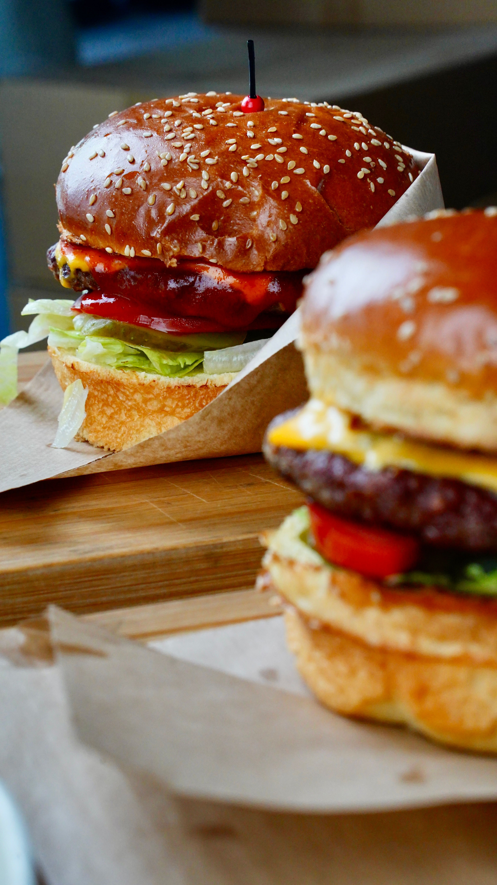

Odin Recipes Burger

Description
A burger is a popular dish made with a soft bun filled with a cooked patty,
fresh vegetables, cheese, and flavorful sauces. It is easy to customize with
different toppings and sauces.
This homemade burger is delicious, filling, and can be served with French fries
or a fresh salad.
Ingredients
- 2 burger buns
- 2 burger patties
- 2 slices of cheese
- 1 small onion, sliced
- 1 tomato, sliced
- 4–5 lettuce leaves
- 2 tablespoons mayonnaise
- 2 tablespoons tomato ketchup
- 1 tablespoon butter
- ½ teaspoon black pepper
- Salt to taste
Steps
- Heat a pan and melt the butter.
- Cut the burger buns in half and lightly toast them on the pan.
- Season the burger patties with salt and black pepper.
- Cook the patties on a hot pan until they are completely cooked and browned on both sides.
- Place a cheese slice on each patty and allow it to melt.
- Spread mayonnaise on the bottom half of each burger bun.
- Add lettuce, tomato, and onion slices.
- Place the cooked patty with melted cheese on top of the vegetables.
- Add tomato ketchup and place the top half of the bun over the patty.
- Serve the burger hot with French fries or your favorite side dish.
Home